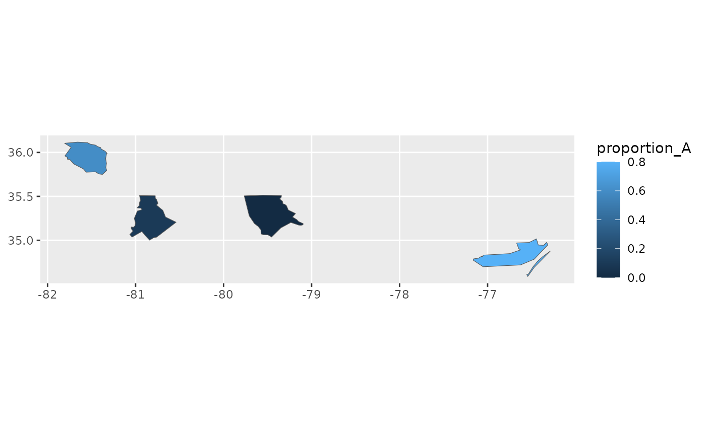

Attach spatial data with 'cartographer'
Source:R/stat_automap.R, R/stat_automap_coords.R
stat_automap.RdUse 'cartographer' to attach a spatial column to the data based
on place names in another column. The result can then be used by
ggplot2::geom_sf() or ggmapinset::geom_sf_inset().
Usage
stat_automap(
mapping = NULL,
data = NULL,
geom = "sf",
position = "identity",
...,
feature_type = NA,
na.rm = TRUE,
show.legend = NA,
inherit.aes = TRUE
)Arguments
- mapping, data, geom, position, na.rm, show.legend, inherit.aes, ...
See
ggplot2::geom_sf().- feature_type
Type of map feature. See
feature_types()for a list of registered types. IfNA, the type is guessed based on the values infeature_names.
Computed variables
- geometry
sfgeometry column- ...
limits as computed by
ggplot2::stat_sf()
Examples
library(ggplot2)
events <- data.frame(
county = c("Mecklenburg", "Carteret", "Moore", "Caldwell"),
proportion_A = c(0.1, 0.8, 0.0, 0.6)
)
ggplot(events, aes(location = county)) +
geom_sf(aes(fill = proportion_A), stat = "automap")
#> Warning: Guessing `feature_type`; provide `feature_type` to coord_automap() to suppress
ggplot(events, aes(location = county)) +
stat_automap(aes(fill = proportion_A)) +
coord_automap(feature_type = "sf.nc")
